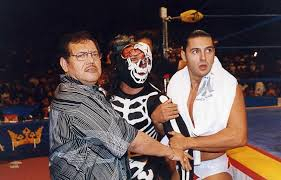

Nombre completo: Antonio Peña Herrada
Fecha de nacimiento: 13 de junio de 1951
Lugar de nacimiento: Ciudad de México, México
Fallecimiento: 5 de octubre de 2006
Alias (como luchador): Espectro Jr., Kahoz
Antonio Peña fue un innovador y creativo dentro de la lucha libre. Comenzó como luchador, pero se volvió famoso como promotor y visionario al fundar la empresa AAA (Asistencia Asesoría y Administración), revolucionando el espectáculo luchístico con personajes coloridos, nuevas ideas y gran producción.
Después de trabajar como creativo en el CMLL, Peña se separó para fundar AAA en 1992. Bajo su liderazgo, la empresa trajo a la televisión mexicana un estilo más moderno, juvenil y con énfasis en el entretenimiento. Descubrió y apoyó a talentos como La Parka, Octagón, Psicosis, Rey Mysterio Jr., y muchos más.
Antonio Peña estudió Bellas Artes antes de dedicarse por completo a la lucha. Tras su fallecimiento en 2006, su legado fue continuado por su familia y su nombre es recordado en el evento anual "Héroes Inmortales", dedicado en su honor.